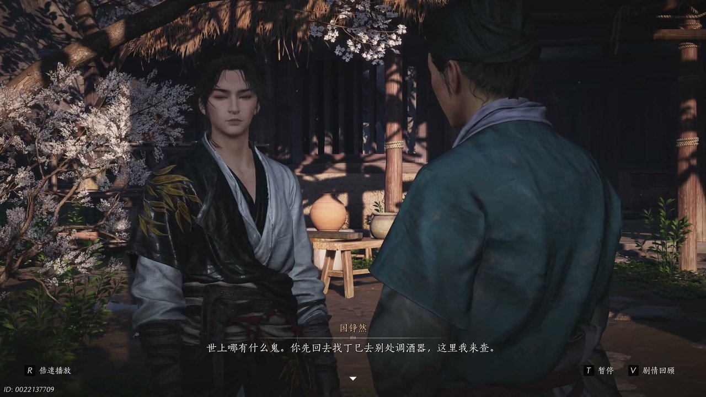
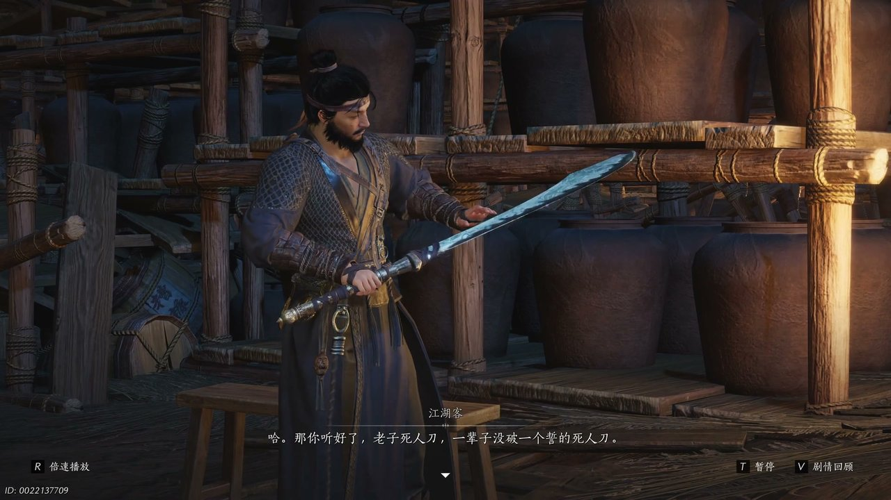
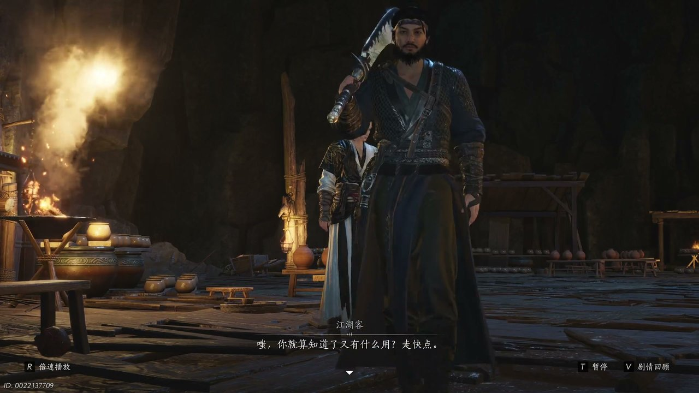
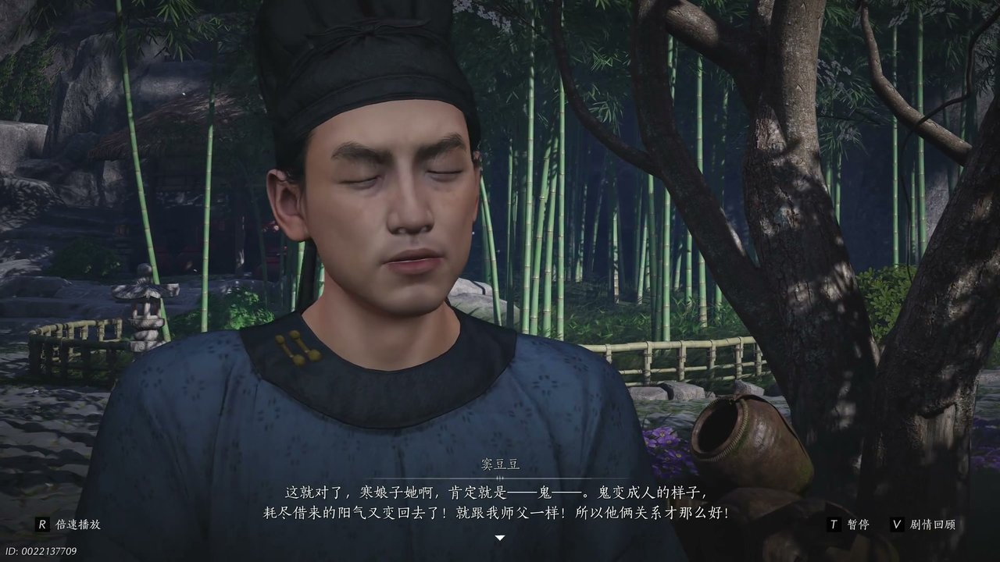
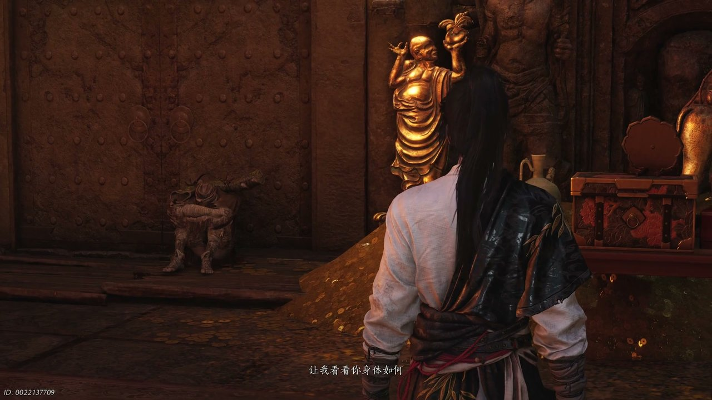
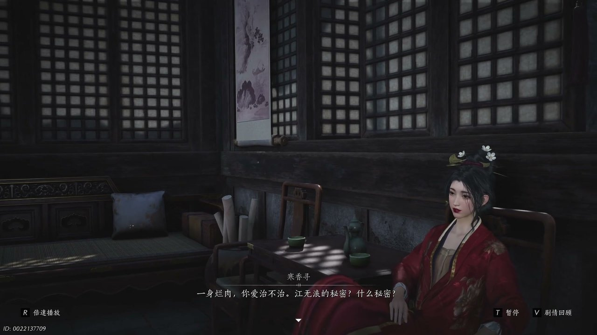

燕云背后的故事：第2集 伊刀
燕云背后的故事：第2集 伊刀

朋友们，上一集咱们说到——玉佩失窃、密信暗藏、恶人南下；新来的朋友可能纳闷，安稳的神仙渡为何会闯入这么多江湖势力？简单说，少东家一直安居神仙渡，一心向往江湖却从未真正远行。可他哪知道，平静居所早已成为各方人马争夺的目标。这不，不羡仙酒馆突发混乱，一场风波就此拉开序幕。

神仙渡不羡仙酒馆之内一片狼藉，酒坛碎裂散落一地，摆放酒器的木架断裂多处，地面还残留着凌乱的踩踏痕迹。宋九慌慌张张跑到少东家面前，满脸惶恐不停念叨，担心是鬼司之人前来作祟，害怕寒姨知晓后怪罪自己看管不力。少东家弯腰查看地面残留的印记，抬手拂过破碎的瓷片，沉稳开口：“世上哪有什么鬼。”他安抚宋九，让对方先前往别处调配调酒器具，此地的痕迹交由自己探查。少东家嗅着空气中浓郁的酒气，又看到红线专属的酒糟豆子，顺着痕迹仔细分辨，发现踪迹一路朝着神仙渡瓷窑的方向延伸，他立刻循着踪迹快步追了上去。刚抵达瓷窑附近，他便看到一名重伤之人倒地呼救，定睛之下认出对方正是此前问路的陌生胖子，来不及思索，连忙上前想要搀扶对方前往附近驿馆医治。

少东家搀扶着重伤之人前行，暗处忽然窜出一道黑衣身影，气息凛冽周身带着浓重的杀伐之气。黑衣人出手迅猛，招式狠戾不留余地，少东家仓促抵挡，手臂不慎被剑气划伤，狼狈后退几步。黑衣人冷声呵斥，口中直呼寒香寻的名号，言语间满是怨怼。少东家故作茫然，询问对方口中之人是谁，声称自己只是奉命讨要物件。黑衣人嗤笑一声，认定少年是故意装疯卖傻，随即自报身份：“老子死人刀一辈子没破一个式的死人刀带路。”伊刀扬言，若是少东家不肯带路寻找寒姨，便将清河村落一一屠戮。少东家心生不忍，恳求伊刀立下誓言放过眼前重伤之人，才愿意领着对方前往不羡仙酒馆，两人一路同行，少东家暗自盘算着寻找脱身的机会。

少东家带着伊刀穿行在清河街巷，街道两旁往来江湖人士众多，四周环境复杂纷乱。少东家捂着受伤的手臂，故意放慢脚步，面露痛苦神色，开口告知伊刀自己伤势加重，无法快速赶路。伊刀面露不耐，斥责少年行事磨磨唧唧，质疑他有意拖延时间。少东家顺势谎称清河山谷错综复杂，自己知晓不羡仙酒馆的具体方位，伊刀人生地不熟，若是独自寻找极易迷失方向。伊刀半信半疑，又担心四处搜寻会惊动其他势力，只能继续让少东家引路。少东家心中暗道：“这人信不得，想办法脱身。”行走途中林间忽然传来异动声响，伊刀警觉起来，让少东家原地等候，自己前去探查暗处之人，临走前放下狠话，若是归来看不到少年身影，便会取下他的头颅。

伊刀离去之后，窦豆豆突然从一旁树丛走出，神色神秘地凑到少东家身旁。窦豆豆告诉少东家，寒姨就像凭空消失一般，明明身处密闭空间，却总能毫无踪迹地隐匿身形，又会毫无征兆地出现。窦豆豆说道：“韩娘子她呀一定就是鬼鬼变成人的样子。”他说起自己的师父天不收大夫，常常独自待在医馆二楼，房间内听不到丝毫动静，可转头之间，对方就会出现在自己身后。窦豆豆笃定寒姨与天不收大夫掌握着隐匿身形的秘术，二人之间藏着不为人知的秘密。少东家起初只当是窦豆豆胡思乱想，可细细回想寒姨平日的种种反常举动，又觉得这番说辞颇有几分道理，心中找寻寒姨的念头更加急切。窦豆豆告知医馆二楼一直紧锁，寻常人不得入内，少东家当即决定前往医馆一探究竟。

少东家找到姚药药，向对方讨要医馆二楼的钥匙，姚药药早已打开门锁，告知他有人时常顺着窗台攀爬进入二楼房间。少东家独自登上医馆二楼，踏入房间瞬间，眼前景象陡然变幻，周身陷入一片奇异幻境之中。无数武学招式画面在眼前闪过，少东家顿感气血翻涌，头晕目眩难以支撑。幻境之内，他见到一众面容模糊的无面之人，还有名叫程心的女子，对方手持一支故人赠送的短笛，神色哀伤。待到少东家清醒过来，程心轻声询问：“你醒了吗，让我看看你身体如何。”程心告知少东家，这支短笛是同袍临刑前所赠，自己多年来一直寻觅故人踪迹，才一直留存此物。程心表示寒姨知晓一切真相，叮嘱少东家日后亲自向寒姨问询，还许诺若是少东家日后想要改头换面，自己可以出手相助。

幻境消散之后，少东家离开医馆，与折返归来的伊刀再次相遇。伊刀察觉到四周隐藏着大批不明势力，这些人马皆是冲着寒姨而来，屋顶之人摆出三才阵手势，贸然闯入必定会陷入包围。伊刀吩咐少东家先斩杀院外马匹断绝变数，自己前去试探阵法破绽，二人分头行动寻找寒姨下落。一番缠斗之后，二人击溃外围喽啰，伊刀向少东家逼问：“江无浪的秘密。”伊刀告诉少东家，楚清泉嘱托自己前来寻找寒姨，索要江无浪隐藏的秘密，江无浪前往黑水城之后便杳无音信，黑水城全城覆灭，江无浪已然生死未卜。与此同时，寒姨得知江湖势力齐聚神仙渡，知晓此地不宜久留，吩咐周叔安排众人收拾行囊，决定离开生活多年的神仙渡。
这一集看下来，我最大的感受就是少年被迫直面江湖恩怨纠葛。上一集里我们只知道神仙渡安稳度日、玉佩莫名丢失、江叔不知所踪；到了这一集，伊刀现身寻人、隐匿密室现世、神仙渡即将搬迁。寒姨究竟藏着什么秘密？黑水城到底发生了何事？江无浪是否还存活于世？所有线索全部指向寒姨与失踪的江叔，少东家不愿跟随寒姨躲避迁徙，决意继续追查真相，一场主动探寻秘密的行动即将展开。执意留下追查过往。观众一：伊刀和寒姨之间究竟有着怎样的恩怨？观众二：少东家执意留下会不会陷入更大危机？下一集关键词：黑水城秘闻、江叔下落。
关于我们
📱 公众号名称：三天游戏
✍️ 作者：曾三天
扫码关注公众号，获取每日最新资讯

商务合作与版权
商务合作 / 内容投稿 / 品牌推广
请关注公众号「三天游戏」后台留言联系
版权声明：本文由作者整理，转载需注明出处。